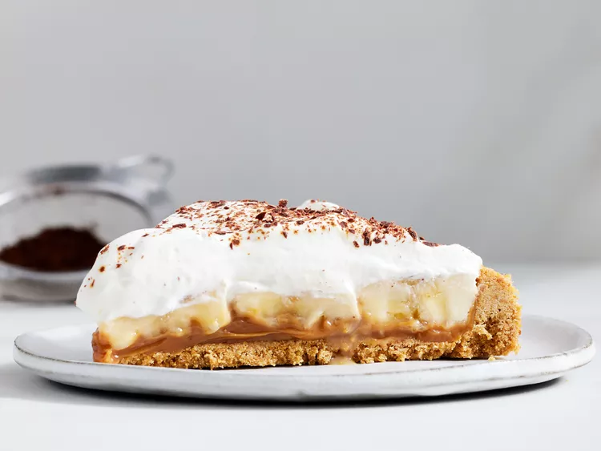

Home
Banoffee Pie

Banoffee pie has gooey toffee, banana, and crunchy graham crackers in every bite. It's an incredibly rich and delicious dessert, so a little goes a long way, but anyone who tries it loves it!
Ingredients
- 1 (13.4 ounce) can dulce de leche
- 1 1/2 cups graham cracker crumbs
- 1/3 cup white sugar
- 2 teaspoons ground ginger (Optional)
- 6 tablespoons butter, melted
- 3 bananas, sliced
- 1 1/2 cups heavy cream
- 3 tablespoons powdered sugar
- chocolate shavings (Optional)
- espresso powder (Optional)
Steps
- Gather ingredients. Preheat the oven to 350 degrees F (175 degrees C).
- Mix graham cracker crumbs, white sugar, ginger (if using), and melted butter together in a medium bowl. Press mixture into an ungreased 9-inch fluted tart pan with a removable bottom or 9-inch pie pie plate.
- Bake crust in preheated oven until set, about 12 to 15 minutes. Cool crust on a wire rack for 15 minutes.
- Spread dulce de leche in the cooled crust; arrange bananas evenly on top.
- Beat heavy cream and powdered sugar in a large bowl until stiff peaks form, about 3 minutes. Spread whipped cream over bananas.
- Refrigerate pie for at least 2 hours to overnight. Sprinkle with chocolate shavings, cocoa powder, and/or espresso powder, if desired, before serving.